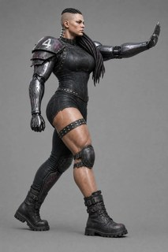
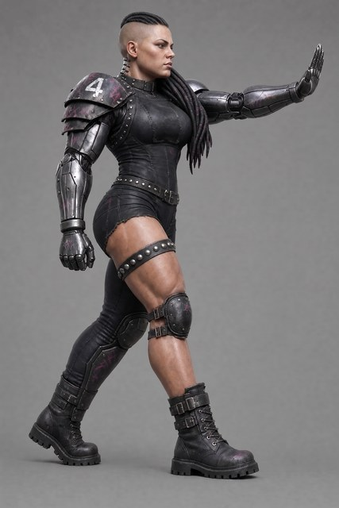

Seven side-view concepts test qualitative heroic proportions and bare-resin readability against the signature v1 gold pose. The fresh-context crop lane, approved two-wave Gemini Batch blind lane, and append-only reconciliation are all present. Machine evidence is complete; no keeper, repair, downstream round or Meshy work is authorized until Dimitri makes the final eye-call.
ONE HUMAN DECISION REMAINS. All seven blind comparisons reject. After direct visual reconciliation, arm A / Flash 3.1 remains the sole FIXABLE-CANDIDATE: its larger head, readable relief and strong pose/kit locality survive several blind frame-map overreads, but its face is different and the body is only partly compacted. The other six remain rejects. Choose focused repair, evidence-only, or reject-all — nothing is promoted automatically.
Final eye-call needed
The machine lanes are complete. Your verdict closes R2 and determines whether A / Flash 3.1 gets a tightly scoped repair round or whether all seven are rejected.
Does A / Flash 3.1 still look like the same Gorgon?Dimitri + Jason + Jeremy
The crop audit sees excellent pose, camera, kit, hair-side and nape preservation, but a rounder/softer different face and only partial compactness.
Advance it only to a focused face/compactness repair plan.
Use it only as heroic/readability evidence, not a lineage base.
Reject it with the rest.
Confirm the six machine rejects?Dimitri + Jason + Jeremy
A/GPT and A/Riverflow fail edit locality; B/Flash is a two-figure montage; the other three B candidates miss the oversized-head objective and at least one signature identity relation. None is a repair recommendation.
Core inputs — the base image(s) these candidates were built from

Arm A core input — v1 r6 gold
FAST machine pre-read
The primary gate is head scale. Edit-arm candidates must also preserve the exact gold identity and all untouched geometry; text-arm candidates must recreate the signature from scratch.
Candidate
FAST call
Why
A · Flash 3.1
FIXABLE-CANDIDATE
Oversized head and readability land; pose/camera/kit stay close; face drifts and compactness is partial.
A · GPT Image 2
Reject
Heroic/readability gains land, but face, expression, pose spacing and kit are broadly redesigned.
A · Riverflow
Reject
Heroic/readability gains land, but face, hair/nape, torso kit and stiff-arm drift beyond the two authorized edits.
B · Flash 3.1
Reject
Hard two-figure montage; also wrong hair side and double stud rows.
B · GPT Image 2
Reject
Strong signature geometry and readability, but the head remains small and the mane falls to the wrong shoulder.
B · Grok Quality
Reject
Small head, two pads, incomplete cyberarms, reversed gait, double stud rows and broken stiff-arm hand.
B · Riverflow
Reject
Small head, wrong-shoulder hair and incomplete pad-side cyberarm.
SLOW blind lane + reconciliation
Gemini first described all seven images without the brief, then compared those frozen descriptions to the spec. Every blind result rejects. Reconciliation corrects frame-map and cyberarm-shoulder-cap overreads without hiding the blind lane's risk signal.
Candidate
Blind call
Reconciled call
A · Flash 3.1
Reject
FIXABLE/REJECT — human verdict
A · GPT Image 2
Reject
Reject — nonlocal edit drift
A · Riverflow
Reject
Reject — nonlocal edit drift
B · Flash 3.1
Reject
Reject — two-figure hard fail
B · GPT Image 2
Reject
Reject — small head + wrong-side mane
B · Grok Quality
Reject
Reject — convergent core failures
B · Riverflow
Reject
Reject — small head + identity failures
Integrity note: five records parsed directly. A/Flash required a semantic-no-op quote escape; B/GPT Image 2 completed its call and full detector list before MAX_TOKENS truncated only the closing summary, which is transparently reconstructed and flagged. No provider request was resubmitted.
A — heroic edits of the v1 r6 gold
All three edit models enlarge the head and improve bare-resin separation. The decision is whether any preserved enough of the gold's identity to justify repair rather than another base-generation round.

A · Flash 3.1 — FIXABLE/REJECT: human verdict required
face identity and…blind cross-checkoutcome disagreem…team pad and cybe…
2 more detectors (6 total)
heroic head and r…leg and print-det…
Only repair candidate; blind overreads visible kit facts, but face drift and partial compactness require Dimitri's call.
full note
The crop lane is more reliable on visible pad, leg and relief facts; the blind description contains shoulder-cap and frame-map overreads. The blind rejection still usefully emphasizes accumulated risk. Keep A/Flash as the sole provisional repair candidate, never as a keeper: Dimitri must decide whether the face drift and partial compactness are repairable enough to justify another round.
outcomeedit localityblind cross-checkpad and leg facts
1 more detectors (5 total)
print readability
Reject for nonlocal face/kit/pose drift; blind pad and leg claims are overreads.
full note
Both screens reject. Correct the blind lane's pad, leg and broad print-readability claims in favor of the direct crop read; the candidate still fails independently because the reference edit is nonlocal and replaces too much of the character identity.
outcomeedit localityblind cross-checkpad and leg factsdreads and relief
Reject for broad identity and kit resynthesis; blind pad/leg mapping is not reliable.
full note
Both screens reject. The crop/direct read corrects blind side-map and thin-detail overstatements, but the result still fails the arm-A experiment because it is a broad redesign rather than a localized proportion/readability edit.
B — fresh text side-view sweep
The text arm does not produce a FAST keeper. Three candidates retain naturalistic small heads; Flash returns a two-figure montage.
outcomefigure countstud rows and hai…blind cross-checkblind subject sel…
Reject: duplicated two-figure montage, plus double stud rows and wrong-side mane.
full note
Reject regardless of any finer proportion reading: the frame is a two-figure montage. The crop/direct evidence is authoritative on that hard fail; blind detail claims are secondary.
outcomeheroic headhair and poseblind cross-checkkit and gaitoutput integrity
Reject: small naturalistic head and wrong-side mane; preserve kit/gait as reference evidence only.
full note
Reject on direct, independent evidence: the primary oversized-head objective failed and the mane is on the wrong shoulder. Blind frame-map and second-pad claims should not be carried forward; the strong kit/gait evidence remains useful reference material only.
outcomeprimary proportio…identity and gaitprint and markingsblind cross-checkframe mapping
Reject: small head, two pads, incomplete cyberarms, reversed gait, double studs and broken stiff-arm.
full note
The lanes converge on a hard reject. Multiple directly visible failures independently defeat the candidate, so no blind side-map ambiguity changes the outcome.
outcomeheroic headhair and cyberarmprint hazardsblind cross-check
1 more detectors (6 total)
gait and pad facts
Reject: small head, wrong-side mane and incomplete hanging cyberarm; gait itself is strong.
full note
Reject because the oversized-head objective, far-shoulder mane and complete-cyberarm identity all fail visibly. Preserve the strong gait evidence; do not carry forward the blind foot/pad mapping errors.
Proposed next steps
No concept is promoted and no downstream work starts until the human verdict is appended.
Record the final human verdictafter Dimitri's eye-call
Append the artifact verdict and round-level carry-forward feedback. If all seven are rejected, close R2 without a keeper.
Plan the response, if any
A face/compactness repair, evidence-only reset, new concept sweep, turnaround or Meshy run belongs to a separately reviewed and approved later round.
A · Flash 3.1 — FIXABLE/REJECT: human verdict required
One image is attached. IMAGE 1 is the approved Gorgon concept: a photorealistic female cyberpunk gridiron blocker caught mid-stride in a stiff-arm advance, seen from her armored-shoulder side with the camera rotated toward her front, her cable-dread mane draped forward over her far shoulder and a segmented chrome spinal implant exposed at the nape of her neck, on a plain neutral gray studio backdrop.
Recreate THIS EXACT image — the same character, the same camera angle, the same stride and stiff-arm pose, the same kit, colours, lighting and background — with EXACTLY TWO PROGRAMS OF CHANGE and nothing else.
CHANGE 1 — HEROIC MINIATURE PROPORTIONS. Rebuild her body proportions as a 32 mm heroic-scale pewter sports miniature: her head becomes clearly OVERSIZED — noticeably larger relative to her shoulders and body than in the attached image, so it can never read as a small head on a big body. Enlarge both hands and both boots to match. Thicken her neck, wrists, ankles and every joint; deepen her ribcage; shorten and densify her limb segments into a chunky, compact read. She must look like a heroic-scale tabletop sculpt, never a naturalistic fashion illustration. She stays tall, athletic and visibly female; never chibi, squat or comic.
CHANGE 2 — PRINT-READABILITY EXAGGERATION. Exaggerate every material boundary so an unpainted one-colour resin print of this figure reads instantly: the chrome cyberarms become more obviously CHUNKY MECHANICAL METAL — bigger beveled armor plates, deeper recessed seams, bold segmented joints, unmistakably machine and never flesh-like. The covered trailing leg's legging becomes THICK padded cloth-and-armor that visibly stands off the leg, so covered-versus-bare is obvious from silhouette alone against the bare leading leg. Every studded leather band — the thigh garter and any strap — carries ONE single row of LARGE, obvious hemispherical studs; never two rows, never small studs. All belts and straps become thicker and bolder so they clearly show up in relief.
EVERYTHING ELSE STAYS IDENTICAL to the attached image: the camera angle and framing, the flat-planted leading foot and heel-raised trailing foot, the fully extended open-palm stiff-arm, the single shoulder pad on the shoulder nearest the camera with its white number 4, the bare pad-free far cyber-shoulder, the forward-draped dread mane and exposed nape implant, the clean visible shaved temple with no socket or stud, the torn corporate patch, the combat boots, the matte black / gunmetal / magenta palette, the background and the lighting. Full figure, nothing cropped; no base, no text or logos beyond what the image already shows, no weapons, no other people.
Reference images
gorgon-r6-B2-riverflow25-1.png
A · GPT Image 2 — reject: identity and kit drift
openai/gpt-image-2 via openrouter · quality=high · $0.18 · 2026-08-03T15:36:53
One image is attached. IMAGE 1 is the approved Gorgon concept: a photorealistic female cyberpunk gridiron blocker caught mid-stride in a stiff-arm advance, seen from her armored-shoulder side with the camera rotated toward her front, her cable-dread mane draped forward over her far shoulder and a segmented chrome spinal implant exposed at the nape of her neck, on a plain neutral gray studio backdrop.
Recreate THIS EXACT image — the same character, the same camera angle, the same stride and stiff-arm pose, the same kit, colours, lighting and background — with EXACTLY TWO PROGRAMS OF CHANGE and nothing else.
CHANGE 1 — HEROIC MINIATURE PROPORTIONS. Rebuild her body proportions as a 32 mm heroic-scale pewter sports miniature: her head becomes clearly OVERSIZED — noticeably larger relative to her shoulders and body than in the attached image, so it can never read as a small head on a big body. Enlarge both hands and both boots to match. Thicken her neck, wrists, ankles and every joint; deepen her ribcage; shorten and densify her limb segments into a chunky, compact read. She must look like a heroic-scale tabletop sculpt, never a naturalistic fashion illustration. She stays tall, athletic and visibly female; never chibi, squat or comic.
CHANGE 2 — PRINT-READABILITY EXAGGERATION. Exaggerate every material boundary so an unpainted one-colour resin print of this figure reads instantly: the chrome cyberarms become more obviously CHUNKY MECHANICAL METAL — bigger beveled armor plates, deeper recessed seams, bold segmented joints, unmistakably machine and never flesh-like. The covered trailing leg's legging becomes THICK padded cloth-and-armor that visibly stands off the leg, so covered-versus-bare is obvious from silhouette alone against the bare leading leg. Every studded leather band — the thigh garter and any strap — carries ONE single row of LARGE, obvious hemispherical studs; never two rows, never small studs. All belts and straps become thicker and bolder so they clearly show up in relief.
EVERYTHING ELSE STAYS IDENTICAL to the attached image: the camera angle and framing, the flat-planted leading foot and heel-raised trailing foot, the fully extended open-palm stiff-arm, the single shoulder pad on the shoulder nearest the camera with its white number 4, the bare pad-free far cyber-shoulder, the forward-draped dread mane and exposed nape implant, the clean visible shaved temple with no socket or stud, the torn corporate patch, the combat boots, the matte black / gunmetal / magenta palette, the background and the lighting. Full figure, nothing cropped; no base, no text or logos beyond what the image already shows, no weapons, no other people.
Reference images
gorgon-r6-B2-riverflow25-1.png
A · Riverflow — reject: nonlocal drift
sourceful/riverflow-v2.5-pro via openrouter · resolution=2K · $0.53 · 2026-08-03T15:38:13
One image is attached. IMAGE 1 is the approved Gorgon concept: a photorealistic female cyberpunk gridiron blocker caught mid-stride in a stiff-arm advance, seen from her armored-shoulder side with the camera rotated toward her front, her cable-dread mane draped forward over her far shoulder and a segmented chrome spinal implant exposed at the nape of her neck, on a plain neutral gray studio backdrop.
Recreate THIS EXACT image — the same character, the same camera angle, the same stride and stiff-arm pose, the same kit, colours, lighting and background — with EXACTLY TWO PROGRAMS OF CHANGE and nothing else.
CHANGE 1 — HEROIC MINIATURE PROPORTIONS. Rebuild her body proportions as a 32 mm heroic-scale pewter sports miniature: her head becomes clearly OVERSIZED — noticeably larger relative to her shoulders and body than in the attached image, so it can never read as a small head on a big body. Enlarge both hands and both boots to match. Thicken her neck, wrists, ankles and every joint; deepen her ribcage; shorten and densify her limb segments into a chunky, compact read. She must look like a heroic-scale tabletop sculpt, never a naturalistic fashion illustration. She stays tall, athletic and visibly female; never chibi, squat or comic.
CHANGE 2 — PRINT-READABILITY EXAGGERATION. Exaggerate every material boundary so an unpainted one-colour resin print of this figure reads instantly: the chrome cyberarms become more obviously CHUNKY MECHANICAL METAL — bigger beveled armor plates, deeper recessed seams, bold segmented joints, unmistakably machine and never flesh-like. The covered trailing leg's legging becomes THICK padded cloth-and-armor that visibly stands off the leg, so covered-versus-bare is obvious from silhouette alone against the bare leading leg. Every studded leather band — the thigh garter and any strap — carries ONE single row of LARGE, obvious hemispherical studs; never two rows, never small studs. All belts and straps become thicker and bolder so they clearly show up in relief.
EVERYTHING ELSE STAYS IDENTICAL to the attached image: the camera angle and framing, the flat-planted leading foot and heel-raised trailing foot, the fully extended open-palm stiff-arm, the single shoulder pad on the shoulder nearest the camera with its white number 4, the bare pad-free far cyber-shoulder, the forward-draped dread mane and exposed nape implant, the clean visible shaved temple with no socket or stud, the torn corporate patch, the combat boots, the matte black / gunmetal / magenta palette, the background and the lighting. Full figure, nothing cropped; no base, no text or logos beyond what the image already shows, no weapons, no other people.
No images are attached. Create a brand-new text-to-image concept; do not copy any previous Gorgon artwork.
A photorealistic full-body studio render of a female CYBERPUNK gridiron-football blocker, on a plain neutral gray studio backdrop with even soft studio lighting, her entire body visible from head to toe including her boots. High-detail character concept art with a heavy PUNK edge: she is a washout from a corporate super-soldier program gone street — every piece of corpo hardware on her has been defaced, spray-tagged, hand-modified, DIY-repaired. Cold, quiet, scary; disciplined military menace, never a pin-up. The punk is in her kit and grooming, not her expression.
CAMERA: a SIDE VIEW rotated slightly toward the front. Start from a true side-on profile of her mid-stride, seen from her armored-shoulder side, then rotate the camera only about 25 to 30 degrees around toward her front. We are looking at her FROM THE SIDE as she strides forwards: she moves toward the VIEWER'S RIGHT, her stride and leading arm reading in clean side silhouette, her face and the front of her torso only partially turned toward the camera. Full figure, nothing cropped.
HEROIC MINIATURE PROPORTIONS: she is designed as production concept art for a 32 mm HEROIC-SCALE resin miniature, in the visual language of a chunky pewter sports sculpt. Her head is deliberately OVERSIZED — clearly larger relative to her shoulders and body than any naturalistic character art, so it can never read as a small head on a big body. Both hands and both combat boots are oversized to match. Thick neck, thick wrists and ankles, substantial joints, deep ribcage and pelvis, short dense limb segments, broad readable muscle planes. She must read like a heroic-scale tabletop sculpt, never a naturalistic fashion illustration: absolutely no fashion-model proportions, tiny head, tiny hands, narrow wrists, long delicate legs or slender ankles. She stays tall, athletic and visibly female; never chibi, squat or comic.
BUILD: a HEAVYWEIGHT — one of the most massive figures in her league, TALL and V-tapered rather than squat: very broad shoulders and a wide, thick, dense back tapering hard to the waist, a thick strong neck, and heavy powerlifter thighs. Her physique is hypertrophied yet engineered — and unmistakably HUGE. Never lean, never slim, never a fashion model.
HEAD: femme features, high cheekbones, a cold level stare aimed forward along her direction of travel, toward the VIEWER'S RIGHT — her menace is stillness, not a snarl. Punk grooming: both temples shaved clear, thick cable-dreadlocks swept back from a high hairline and draped forward as ONE CONNECTED MASS over her FAR shoulder — the shoulder away from the camera — leaving the back of her neck completely clear: at the nape, a chunky segmented chrome SPINAL IMPLANT of large vertebral plates runs from the base of her skull down under her collar, clearly visible in this view. The locks are thumb-thick sculpted cords with blunt connected ends and no floating loops. The visible shaved temple is CLEAN BARE SKIN — do NOT draw any socket, stud or jewel on the visible temple or forehead.
CHROME: BOTH arms are full military-grade cyberarms from the shoulder down — symmetric, obviously CHUNKY MECHANICAL METAL, clearly oversized versus flesh arms: big beveled armor plates, deep recessed panel seams, bold segmented joints, unmistakably machine and never flesh-like, NOT crude industrial hydraulics. The chrome is battle-scuffed, with small hand-sprayed stencil tags. Hands fully articulated chrome, four fingers and a thumb each, oversized to the heroic contract. Her legs are flesh and muscle.
KIT (punk sports armor, matte black and gunmetal with hot magenta neon accent trim): a single asymmetric armored shoulder pad on ONE shoulder only — the NEAR shoulder, the one closest to the camera — two or three layered angular plasteel plates with a beveled rim, scuffed and spray-tagged, its top plate clean with no number or emblem. The FAR shoulder has NO pad: only the bare, smooth chrome ball of that cyberarm's shoulder joint — no plate, no strap, no armor there. A snug armored compression bodysuit with a reinforced torso panel; on the chest, a darker torn rectangle where a corporate insignia patch was ripped away; THICK, BOLD studded leather straps and belts — every strap and belt is chunky enough to show up in resin relief, and every studded band carries ONE single row of LARGE hemispherical studs, never two rows, never small studs. ASYMMETRIC LEGS: the bodysuit legging covers ONLY the FAR leg — the trailing leg — as ONE CONTINUOUS legging from hip down into the boot: THICK padded cloth-and-armor that visibly stands off the leg so the covered leg reads obviously different from the bare leg in pure silhouette, with a reinforced thigh panel and an armored shin guard; the legging is fully intact, with NO rips, NO holes, NO cutouts and NO skin showing through it anywhere. The NEAR leg — the leading leg — is BARE muscular flesh from mid-thigh all the way down to the boot: the suit is cut away there with a single raw torn edge at mid-thigh, and a wide THICK STUDDED LEATHER GARTER strap — one single row of large hemispherical studs — wraps high around the bare thigh. The KNEE PADS DIFFER: on the covered leg, a hard ARMORED knee pad matching the shin guard's plating; on the bare leg, a scuffed LEATHER knee pad strapped directly onto the bare skin with buckled straps. On both feet: BULKY OVERSIZED COMBAT BOOTS — heavy buckled military jump-boots with thick lugged soles and broad toe boxes, chunky and punk, never sneakers or cleats-shoes.
POSE: caught MID-STRIDE in an upright walking advance, moving forward with unhurried menace — a frozen MID-STANCE frame from a walk cycle. The NEAR bare leg LEADS, and its foot is fully planted: the leading combat boot is PLANTED COMPLETELY FLAT on the ground ahead of her, with BOTH the HEEL AND the TOES of that boot pressed flat against the floor, the entire sole in contact from heel to toe, and her full body weight carried directly over that flat leading foot. The FAR armored leg TRAILS behind her, toes pointing forward, with only the BALL OF THE FOOT AND TOES pressed to the ground and the HEEL RAISED off the floor — a real walking push-off. Torso upright, shoulders square, hips driving forward, chin level. STIFF-ARM: the FAR arm is FULLY EXTENDED forward from the shoulder at shoulder height, reaching ahead of her toward the VIEWER'S RIGHT into open space, clearly separated ahead of her body — a "you shall not pass" strike frozen mid-extension, the open palm a full arm's length ahead of her chest, elbow only very slightly bent. NOT a bent-elbow "stop" gesture held close to the body. The forearm angles about 20 degrees downward; the palm is OPEN, facing forward along her direction of travel, fingers together as a thick fan, thumb visible. The NEAR arm hangs at her side, slightly flexed, its chrome hand a loose fist. Both hands are clearly EMPTY.
No weapons, no ball, no other people, no base or pedestal, and no text, numbers or logos anywhere — the shoulder pad carries no number or emblem; the only markings are strictly illegible spray-stencil tags.
Reference images
none — text-only generation
B · GPT Image 2 — reject: small head
openai/gpt-image-2 via openrouter · quality=high · $0.15 · 2026-08-03T15:36:30
No images are attached. Create a brand-new text-to-image concept; do not copy any previous Gorgon artwork.
A photorealistic full-body studio render of a female CYBERPUNK gridiron-football blocker, on a plain neutral gray studio backdrop with even soft studio lighting, her entire body visible from head to toe including her boots. High-detail character concept art with a heavy PUNK edge: she is a washout from a corporate super-soldier program gone street — every piece of corpo hardware on her has been defaced, spray-tagged, hand-modified, DIY-repaired. Cold, quiet, scary; disciplined military menace, never a pin-up. The punk is in her kit and grooming, not her expression.
CAMERA: a SIDE VIEW rotated slightly toward the front. Start from a true side-on profile of her mid-stride, seen from her armored-shoulder side, then rotate the camera only about 25 to 30 degrees around toward her front. We are looking at her FROM THE SIDE as she strides forwards: she moves toward the VIEWER'S RIGHT, her stride and leading arm reading in clean side silhouette, her face and the front of her torso only partially turned toward the camera. Full figure, nothing cropped.
HEROIC MINIATURE PROPORTIONS: she is designed as production concept art for a 32 mm HEROIC-SCALE resin miniature, in the visual language of a chunky pewter sports sculpt. Her head is deliberately OVERSIZED — clearly larger relative to her shoulders and body than any naturalistic character art, so it can never read as a small head on a big body. Both hands and both combat boots are oversized to match. Thick neck, thick wrists and ankles, substantial joints, deep ribcage and pelvis, short dense limb segments, broad readable muscle planes. She must read like a heroic-scale tabletop sculpt, never a naturalistic fashion illustration: absolutely no fashion-model proportions, tiny head, tiny hands, narrow wrists, long delicate legs or slender ankles. She stays tall, athletic and visibly female; never chibi, squat or comic.
BUILD: a HEAVYWEIGHT — one of the most massive figures in her league, TALL and V-tapered rather than squat: very broad shoulders and a wide, thick, dense back tapering hard to the waist, a thick strong neck, and heavy powerlifter thighs. Her physique is hypertrophied yet engineered — and unmistakably HUGE. Never lean, never slim, never a fashion model.
HEAD: femme features, high cheekbones, a cold level stare aimed forward along her direction of travel, toward the VIEWER'S RIGHT — her menace is stillness, not a snarl. Punk grooming: both temples shaved clear, thick cable-dreadlocks swept back from a high hairline and draped forward as ONE CONNECTED MASS over her FAR shoulder — the shoulder away from the camera — leaving the back of her neck completely clear: at the nape, a chunky segmented chrome SPINAL IMPLANT of large vertebral plates runs from the base of her skull down under her collar, clearly visible in this view. The locks are thumb-thick sculpted cords with blunt connected ends and no floating loops. The visible shaved temple is CLEAN BARE SKIN — do NOT draw any socket, stud or jewel on the visible temple or forehead.
CHROME: BOTH arms are full military-grade cyberarms from the shoulder down — symmetric, obviously CHUNKY MECHANICAL METAL, clearly oversized versus flesh arms: big beveled armor plates, deep recessed panel seams, bold segmented joints, unmistakably machine and never flesh-like, NOT crude industrial hydraulics. The chrome is battle-scuffed, with small hand-sprayed stencil tags. Hands fully articulated chrome, four fingers and a thumb each, oversized to the heroic contract. Her legs are flesh and muscle.
KIT (punk sports armor, matte black and gunmetal with hot magenta neon accent trim): a single asymmetric armored shoulder pad on ONE shoulder only — the NEAR shoulder, the one closest to the camera — two or three layered angular plasteel plates with a beveled rim, scuffed and spray-tagged, its top plate clean with no number or emblem. The FAR shoulder has NO pad: only the bare, smooth chrome ball of that cyberarm's shoulder joint — no plate, no strap, no armor there. A snug armored compression bodysuit with a reinforced torso panel; on the chest, a darker torn rectangle where a corporate insignia patch was ripped away; THICK, BOLD studded leather straps and belts — every strap and belt is chunky enough to show up in resin relief, and every studded band carries ONE single row of LARGE hemispherical studs, never two rows, never small studs. ASYMMETRIC LEGS: the bodysuit legging covers ONLY the FAR leg — the trailing leg — as ONE CONTINUOUS legging from hip down into the boot: THICK padded cloth-and-armor that visibly stands off the leg so the covered leg reads obviously different from the bare leg in pure silhouette, with a reinforced thigh panel and an armored shin guard; the legging is fully intact, with NO rips, NO holes, NO cutouts and NO skin showing through it anywhere. The NEAR leg — the leading leg — is BARE muscular flesh from mid-thigh all the way down to the boot: the suit is cut away there with a single raw torn edge at mid-thigh, and a wide THICK STUDDED LEATHER GARTER strap — one single row of large hemispherical studs — wraps high around the bare thigh. The KNEE PADS DIFFER: on the covered leg, a hard ARMORED knee pad matching the shin guard's plating; on the bare leg, a scuffed LEATHER knee pad strapped directly onto the bare skin with buckled straps. On both feet: BULKY OVERSIZED COMBAT BOOTS — heavy buckled military jump-boots with thick lugged soles and broad toe boxes, chunky and punk, never sneakers or cleats-shoes.
POSE: caught MID-STRIDE in an upright walking advance, moving forward with unhurried menace — a frozen MID-STANCE frame from a walk cycle. The NEAR bare leg LEADS, and its foot is fully planted: the leading combat boot is PLANTED COMPLETELY FLAT on the ground ahead of her, with BOTH the HEEL AND the TOES of that boot pressed flat against the floor, the entire sole in contact from heel to toe, and her full body weight carried directly over that flat leading foot. The FAR armored leg TRAILS behind her, toes pointing forward, with only the BALL OF THE FOOT AND TOES pressed to the ground and the HEEL RAISED off the floor — a real walking push-off. Torso upright, shoulders square, hips driving forward, chin level. STIFF-ARM: the FAR arm is FULLY EXTENDED forward from the shoulder at shoulder height, reaching ahead of her toward the VIEWER'S RIGHT into open space, clearly separated ahead of her body — a "you shall not pass" strike frozen mid-extension, the open palm a full arm's length ahead of her chest, elbow only very slightly bent. NOT a bent-elbow "stop" gesture held close to the body. The forearm angles about 20 degrees downward; the palm is OPEN, facing forward along her direction of travel, fingers together as a thick fan, thumb visible. The NEAR arm hangs at her side, slightly flexed, its chrome hand a loose fist. Both hands are clearly EMPTY.
No weapons, no ball, no other people, no base or pedestal, and no text, numbers or logos anywhere — the shoulder pad carries no number or emblem; the only markings are strictly illegible spray-stencil tags.
Reference images
none — text-only generation
B · Grok Quality — reject: multiple core failures
x-ai/grok-imagine-image-quality via openrouter · resolution=2K · $0.07 · 2026-08-03T15:35:01
No images are attached. Create a brand-new text-to-image concept; do not copy any previous Gorgon artwork.
A photorealistic full-body studio render of a female CYBERPUNK gridiron-football blocker, on a plain neutral gray studio backdrop with even soft studio lighting, her entire body visible from head to toe including her boots. High-detail character concept art with a heavy PUNK edge: she is a washout from a corporate super-soldier program gone street — every piece of corpo hardware on her has been defaced, spray-tagged, hand-modified, DIY-repaired. Cold, quiet, scary; disciplined military menace, never a pin-up. The punk is in her kit and grooming, not her expression.
CAMERA: a SIDE VIEW rotated slightly toward the front. Start from a true side-on profile of her mid-stride, seen from her armored-shoulder side, then rotate the camera only about 25 to 30 degrees around toward her front. We are looking at her FROM THE SIDE as she strides forwards: she moves toward the VIEWER'S RIGHT, her stride and leading arm reading in clean side silhouette, her face and the front of her torso only partially turned toward the camera. Full figure, nothing cropped.
HEROIC MINIATURE PROPORTIONS: she is designed as production concept art for a 32 mm HEROIC-SCALE resin miniature, in the visual language of a chunky pewter sports sculpt. Her head is deliberately OVERSIZED — clearly larger relative to her shoulders and body than any naturalistic character art, so it can never read as a small head on a big body. Both hands and both combat boots are oversized to match. Thick neck, thick wrists and ankles, substantial joints, deep ribcage and pelvis, short dense limb segments, broad readable muscle planes. She must read like a heroic-scale tabletop sculpt, never a naturalistic fashion illustration: absolutely no fashion-model proportions, tiny head, tiny hands, narrow wrists, long delicate legs or slender ankles. She stays tall, athletic and visibly female; never chibi, squat or comic.
BUILD: a HEAVYWEIGHT — one of the most massive figures in her league, TALL and V-tapered rather than squat: very broad shoulders and a wide, thick, dense back tapering hard to the waist, a thick strong neck, and heavy powerlifter thighs. Her physique is hypertrophied yet engineered — and unmistakably HUGE. Never lean, never slim, never a fashion model.
HEAD: femme features, high cheekbones, a cold level stare aimed forward along her direction of travel, toward the VIEWER'S RIGHT — her menace is stillness, not a snarl. Punk grooming: both temples shaved clear, thick cable-dreadlocks swept back from a high hairline and draped forward as ONE CONNECTED MASS over her FAR shoulder — the shoulder away from the camera — leaving the back of her neck completely clear: at the nape, a chunky segmented chrome SPINAL IMPLANT of large vertebral plates runs from the base of her skull down under her collar, clearly visible in this view. The locks are thumb-thick sculpted cords with blunt connected ends and no floating loops. The visible shaved temple is CLEAN BARE SKIN — do NOT draw any socket, stud or jewel on the visible temple or forehead.
CHROME: BOTH arms are full military-grade cyberarms from the shoulder down — symmetric, obviously CHUNKY MECHANICAL METAL, clearly oversized versus flesh arms: big beveled armor plates, deep recessed panel seams, bold segmented joints, unmistakably machine and never flesh-like, NOT crude industrial hydraulics. The chrome is battle-scuffed, with small hand-sprayed stencil tags. Hands fully articulated chrome, four fingers and a thumb each, oversized to the heroic contract. Her legs are flesh and muscle.
KIT (punk sports armor, matte black and gunmetal with hot magenta neon accent trim): a single asymmetric armored shoulder pad on ONE shoulder only — the NEAR shoulder, the one closest to the camera — two or three layered angular plasteel plates with a beveled rim, scuffed and spray-tagged, its top plate clean with no number or emblem. The FAR shoulder has NO pad: only the bare, smooth chrome ball of that cyberarm's shoulder joint — no plate, no strap, no armor there. A snug armored compression bodysuit with a reinforced torso panel; on the chest, a darker torn rectangle where a corporate insignia patch was ripped away; THICK, BOLD studded leather straps and belts — every strap and belt is chunky enough to show up in resin relief, and every studded band carries ONE single row of LARGE hemispherical studs, never two rows, never small studs. ASYMMETRIC LEGS: the bodysuit legging covers ONLY the FAR leg — the trailing leg — as ONE CONTINUOUS legging from hip down into the boot: THICK padded cloth-and-armor that visibly stands off the leg so the covered leg reads obviously different from the bare leg in pure silhouette, with a reinforced thigh panel and an armored shin guard; the legging is fully intact, with NO rips, NO holes, NO cutouts and NO skin showing through it anywhere. The NEAR leg — the leading leg — is BARE muscular flesh from mid-thigh all the way down to the boot: the suit is cut away there with a single raw torn edge at mid-thigh, and a wide THICK STUDDED LEATHER GARTER strap — one single row of large hemispherical studs — wraps high around the bare thigh. The KNEE PADS DIFFER: on the covered leg, a hard ARMORED knee pad matching the shin guard's plating; on the bare leg, a scuffed LEATHER knee pad strapped directly onto the bare skin with buckled straps. On both feet: BULKY OVERSIZED COMBAT BOOTS — heavy buckled military jump-boots with thick lugged soles and broad toe boxes, chunky and punk, never sneakers or cleats-shoes.
POSE: caught MID-STRIDE in an upright walking advance, moving forward with unhurried menace — a frozen MID-STANCE frame from a walk cycle. The NEAR bare leg LEADS, and its foot is fully planted: the leading combat boot is PLANTED COMPLETELY FLAT on the ground ahead of her, with BOTH the HEEL AND the TOES of that boot pressed flat against the floor, the entire sole in contact from heel to toe, and her full body weight carried directly over that flat leading foot. The FAR armored leg TRAILS behind her, toes pointing forward, with only the BALL OF THE FOOT AND TOES pressed to the ground and the HEEL RAISED off the floor — a real walking push-off. Torso upright, shoulders square, hips driving forward, chin level. STIFF-ARM: the FAR arm is FULLY EXTENDED forward from the shoulder at shoulder height, reaching ahead of her toward the VIEWER'S RIGHT into open space, clearly separated ahead of her body — a "you shall not pass" strike frozen mid-extension, the open palm a full arm's length ahead of her chest, elbow only very slightly bent. NOT a bent-elbow "stop" gesture held close to the body. The forearm angles about 20 degrees downward; the palm is OPEN, facing forward along her direction of travel, fingers together as a thick fan, thumb visible. The NEAR arm hangs at her side, slightly flexed, its chrome hand a loose fist. Both hands are clearly EMPTY.
No weapons, no ball, no other people, no base or pedestal, and no text, numbers or logos anywhere — the shoulder pad carries no number or emblem; the only markings are strictly illegible spray-stencil tags.
Reference images
none — text-only generation
B · Riverflow — reject: small head
sourceful/riverflow-v2.5-pro via openrouter · resolution=2K aspect_ratio=2:3 · $0.34 · 2026-08-03T15:37:16
No images are attached. Create a brand-new text-to-image concept; do not copy any previous Gorgon artwork.
A photorealistic full-body studio render of a female CYBERPUNK gridiron-football blocker, on a plain neutral gray studio backdrop with even soft studio lighting, her entire body visible from head to toe including her boots. High-detail character concept art with a heavy PUNK edge: she is a washout from a corporate super-soldier program gone street — every piece of corpo hardware on her has been defaced, spray-tagged, hand-modified, DIY-repaired. Cold, quiet, scary; disciplined military menace, never a pin-up. The punk is in her kit and grooming, not her expression.
CAMERA: a SIDE VIEW rotated slightly toward the front. Start from a true side-on profile of her mid-stride, seen from her armored-shoulder side, then rotate the camera only about 25 to 30 degrees around toward her front. We are looking at her FROM THE SIDE as she strides forwards: she moves toward the VIEWER'S RIGHT, her stride and leading arm reading in clean side silhouette, her face and the front of her torso only partially turned toward the camera. Full figure, nothing cropped.
HEROIC MINIATURE PROPORTIONS: she is designed as production concept art for a 32 mm HEROIC-SCALE resin miniature, in the visual language of a chunky pewter sports sculpt. Her head is deliberately OVERSIZED — clearly larger relative to her shoulders and body than any naturalistic character art, so it can never read as a small head on a big body. Both hands and both combat boots are oversized to match. Thick neck, thick wrists and ankles, substantial joints, deep ribcage and pelvis, short dense limb segments, broad readable muscle planes. She must read like a heroic-scale tabletop sculpt, never a naturalistic fashion illustration: absolutely no fashion-model proportions, tiny head, tiny hands, narrow wrists, long delicate legs or slender ankles. She stays tall, athletic and visibly female; never chibi, squat or comic.
BUILD: a HEAVYWEIGHT — one of the most massive figures in her league, TALL and V-tapered rather than squat: very broad shoulders and a wide, thick, dense back tapering hard to the waist, a thick strong neck, and heavy powerlifter thighs. Her physique is hypertrophied yet engineered — and unmistakably HUGE. Never lean, never slim, never a fashion model.
HEAD: femme features, high cheekbones, a cold level stare aimed forward along her direction of travel, toward the VIEWER'S RIGHT — her menace is stillness, not a snarl. Punk grooming: both temples shaved clear, thick cable-dreadlocks swept back from a high hairline and draped forward as ONE CONNECTED MASS over her FAR shoulder — the shoulder away from the camera — leaving the back of her neck completely clear: at the nape, a chunky segmented chrome SPINAL IMPLANT of large vertebral plates runs from the base of her skull down under her collar, clearly visible in this view. The locks are thumb-thick sculpted cords with blunt connected ends and no floating loops. The visible shaved temple is CLEAN BARE SKIN — do NOT draw any socket, stud or jewel on the visible temple or forehead.
CHROME: BOTH arms are full military-grade cyberarms from the shoulder down — symmetric, obviously CHUNKY MECHANICAL METAL, clearly oversized versus flesh arms: big beveled armor plates, deep recessed panel seams, bold segmented joints, unmistakably machine and never flesh-like, NOT crude industrial hydraulics. The chrome is battle-scuffed, with small hand-sprayed stencil tags. Hands fully articulated chrome, four fingers and a thumb each, oversized to the heroic contract. Her legs are flesh and muscle.
KIT (punk sports armor, matte black and gunmetal with hot magenta neon accent trim): a single asymmetric armored shoulder pad on ONE shoulder only — the NEAR shoulder, the one closest to the camera — two or three layered angular plasteel plates with a beveled rim, scuffed and spray-tagged, its top plate clean with no number or emblem. The FAR shoulder has NO pad: only the bare, smooth chrome ball of that cyberarm's shoulder joint — no plate, no strap, no armor there. A snug armored compression bodysuit with a reinforced torso panel; on the chest, a darker torn rectangle where a corporate insignia patch was ripped away; THICK, BOLD studded leather straps and belts — every strap and belt is chunky enough to show up in resin relief, and every studded band carries ONE single row of LARGE hemispherical studs, never two rows, never small studs. ASYMMETRIC LEGS: the bodysuit legging covers ONLY the FAR leg — the trailing leg — as ONE CONTINUOUS legging from hip down into the boot: THICK padded cloth-and-armor that visibly stands off the leg so the covered leg reads obviously different from the bare leg in pure silhouette, with a reinforced thigh panel and an armored shin guard; the legging is fully intact, with NO rips, NO holes, NO cutouts and NO skin showing through it anywhere. The NEAR leg — the leading leg — is BARE muscular flesh from mid-thigh all the way down to the boot: the suit is cut away there with a single raw torn edge at mid-thigh, and a wide THICK STUDDED LEATHER GARTER strap — one single row of large hemispherical studs — wraps high around the bare thigh. The KNEE PADS DIFFER: on the covered leg, a hard ARMORED knee pad matching the shin guard's plating; on the bare leg, a scuffed LEATHER knee pad strapped directly onto the bare skin with buckled straps. On both feet: BULKY OVERSIZED COMBAT BOOTS — heavy buckled military jump-boots with thick lugged soles and broad toe boxes, chunky and punk, never sneakers or cleats-shoes.
POSE: caught MID-STRIDE in an upright walking advance, moving forward with unhurried menace — a frozen MID-STANCE frame from a walk cycle. The NEAR bare leg LEADS, and its foot is fully planted: the leading combat boot is PLANTED COMPLETELY FLAT on the ground ahead of her, with BOTH the HEEL AND the TOES of that boot pressed flat against the floor, the entire sole in contact from heel to toe, and her full body weight carried directly over that flat leading foot. The FAR armored leg TRAILS behind her, toes pointing forward, with only the BALL OF THE FOOT AND TOES pressed to the ground and the HEEL RAISED off the floor — a real walking push-off. Torso upright, shoulders square, hips driving forward, chin level. STIFF-ARM: the FAR arm is FULLY EXTENDED forward from the shoulder at shoulder height, reaching ahead of her toward the VIEWER'S RIGHT into open space, clearly separated ahead of her body — a "you shall not pass" strike frozen mid-extension, the open palm a full arm's length ahead of her chest, elbow only very slightly bent. NOT a bent-elbow "stop" gesture held close to the body. The forearm angles about 20 degrees downward; the palm is OPEN, facing forward along her direction of travel, fingers together as a thick fan, thumb visible. The NEAR arm hangs at her side, slightly flexed, its chrome hand a loose fist. Both hands are clearly EMPTY.
No weapons, no ball, no other people, no base or pedestal, and no text, numbers or logos anywhere — the shoulder pad carries no number or emblem; the only markings are strictly illegible spray-stencil tags.